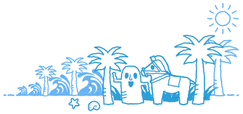

センターからのお知らせ
- 2018/XX/XX
- 宮崎市民活動センターの会議コーナー 最新予約状況
- 2018/XX/XX
- 《重要》 臨時休館（5月22日（火））のお知らせ
- 2018/XX/XX
- かわら版5月号に関して～訂正とお詫び～
- 2018/XX/XX
- ［重要なお知らせ］平成30年度の当センターの休館予定日について
- 2018/XX/XX
- 5月15日（火）第2回資金づくり講座「クラウドファンディング」を開催いたします。
- 2018/XX/XX
- あなたの団体をPRしませんか？




宮崎市民活動センター
開館時間 9:00 ～ 22:00
※日曜は夕方6時まで
〒880-0001
宮崎市橘通西1丁目1番2号 宮崎市民プラザ3階
TEL：(0985) 20-8777
FAX：(0985) 20-8411
E-mail：info@miyazaki-npocenter.jp